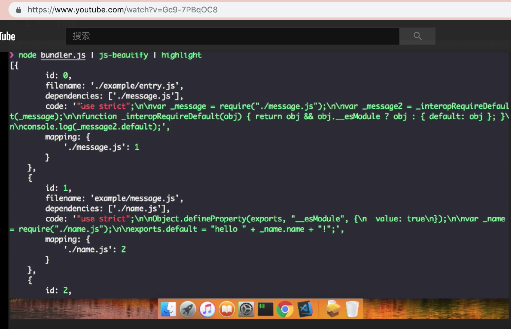
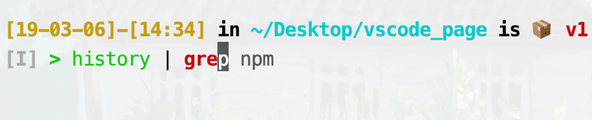
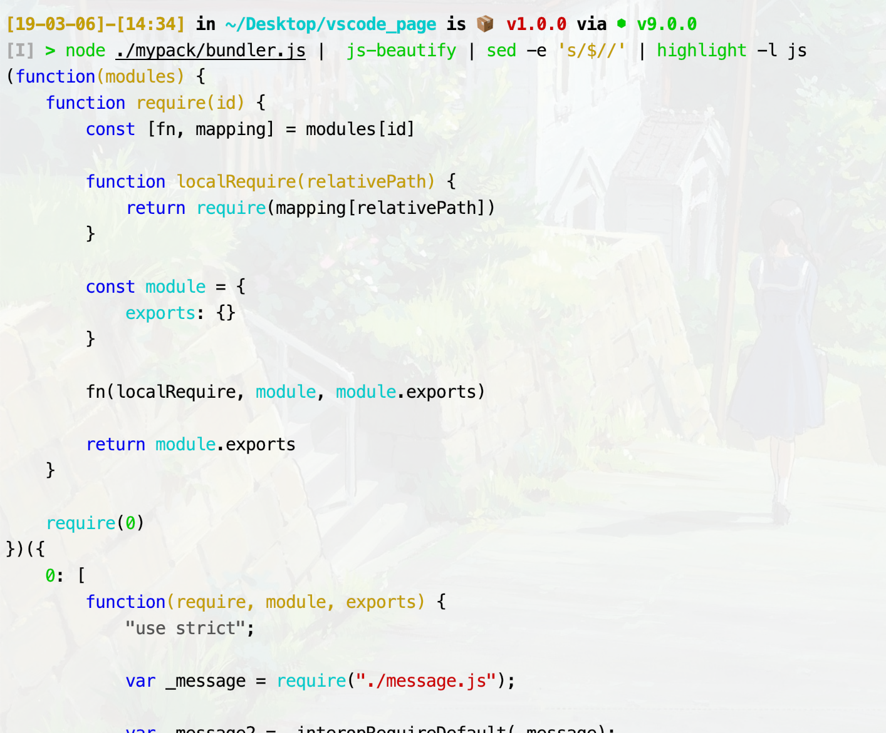
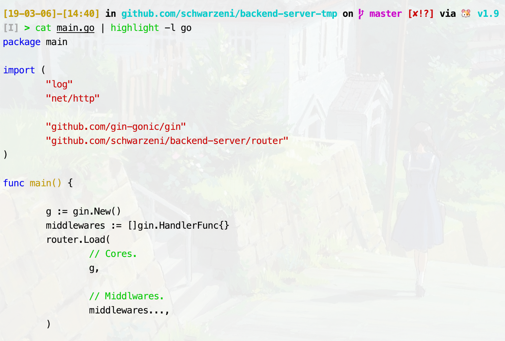

黑白的输出太丑啦
今天在看一个老外的讲座的时候，发现他的终端画风是这样的：

真的非常好看！于是乎我也想把我的终端变成那样子
环境
- MacOS
- zsh 5.3
- oh-my-zsh
- node 9.0.0
配置命令行
这个比较简单，就是安装一个插件 zsh-syntax-highlighting 就可以了
1 | git clone https://github.com/zsh-users/zsh-syntax-highlighting.git ${ZSH_CUSTOM:-~/.oh-my-zsh/custom}/plugins/zsh-syntax-highlighting |
然后在配置文件 ~/.zshrc 里加上即可
1 | plugins=(.... zsh-syntax-highlighting) |
保存之后source一下，在命令行输入的时候就有颜色了，命令不正确还会红色高亮显示

配置输出
需要使用npm全局安装两个包 js-beautify, cli-highlight，分别是格式化js代码和对js代码进行高亮处理
1 | npm install -g js-beautify |
这个时候，如果你执行一个nodejs文件，输入如下命令
1 | node ./mypack/bundler.js | js-beautify | sed -e 's/$//' | highlight -l js |
那么画风就会变成这样子

不加那个sed命令的话输出结果的最后会出现一个高亮的$，有点丑
其他
其实这个 highlight 还可以高亮别的文件，修改-l后面的值就可以了

非常赞！